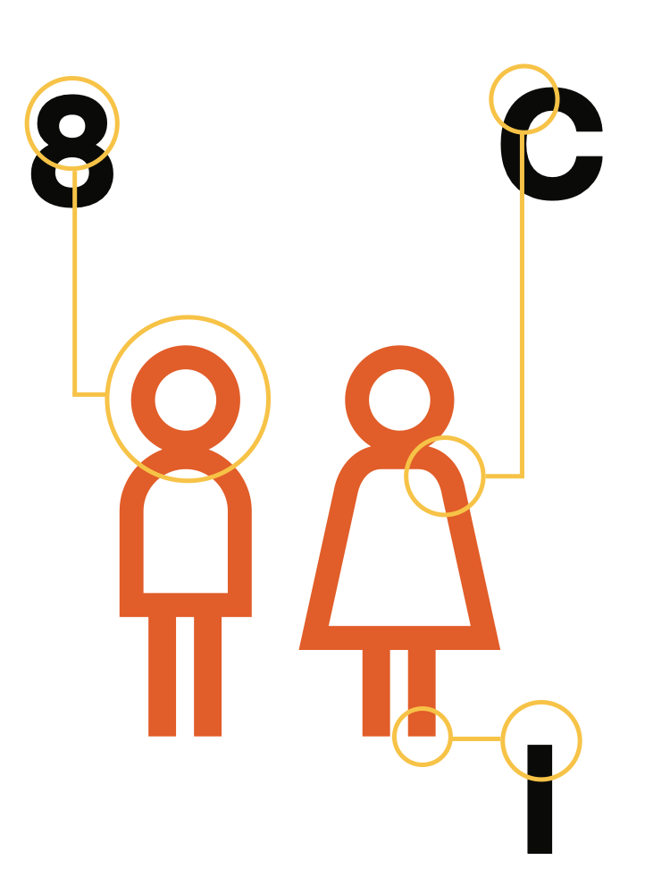

Typeface
Pacaembu Typeface
Pacaembu is our contemporary sans-serif typeface, chosen for its clean, modern aesthetic that reflects ULTIM8’s visual identity. Its friendly and approachable letterforms complement our empathetic, welcoming, and customer-focused personality.
Designed to support applications such as wayfinding and outdoor communication, Pacaembu offers strong legibility across physical and digital touchpoints. With seven main weights, it provides the flexibility to create clear visual hierarchy across signage, promotional materials, and digital platforms.
Our ULTIM8 logotype uses Pacaembu Semibold, establishing a confident yet approachable brand presence.
Try the Typeface
All Weights
Font Usage — click any line and type to test
Patterns
Mix
Pattern System
Our pattern system adds flexibility, personality, and consistency to ULTIM8’s visual identity. Across packaging, promotions, and everyday applications, three distinct patterns strengthen brand recognition and create visual interest.
- Logo Pattern: Reinforces brand recognition through repetition, turning grocery bags, merchandise, and packaging into recognizable brand touchpoints.
- Diamond Pattern: Extends our signature geometry into a distinctive visual texture for brochures, presentations, in-store signage, and digital communications.
- Campaign Pattern: Allows creative flexibility while maintaining consistency across seasonal campaigns, promotional offers, social media, and special events.
Color Options
Icons
Our icons are designed to make everyday shopping simpler, clearer, and more intuitive. Using a consistent outline style, rounded forms, and minimal details, they communicate information quickly while maintaining our friendly and approachable brand personality.
The curves, straight bars, and geometric forms of our icons are inspired by Pacaembu, our primary brand typeface, creating a visual connection between our typography and iconography. Consistent stroke weights, balanced proportions, and recognizable shapes ensure clarity across physical and digital touchpoints.
Our icon system represents shopping essentials, product categories, services, and accessibility. Together, these elements reduce visual clutter, support intuitive navigation, and create a cohesive brand experience.

Built from Pacaembu: 8, C and I
Layouts
Margins
Rule 1 - Consistent Spacing
Set margins by dividing the longest side of the layout by 20. Use this measurement consistently on all four sides to create balanced spacing and a clear content area.
Rule 2 - Optical Adjustment
Margins may be adjusted slightly for unusually wide, narrow, or small formats. Always maintain enough breathing room to keep content readable and visually balanced.
Columns
Rule 1 - Flexible Grid
Organize content using a grid of 3, 6, 9 or 12 columns, depending on the size and complexity of the layout.
Rule 2 - Clear Alignment
Align text, images, and graphic elements to the column grid. Use fewer columns for simple compositions and more columns for information-heavy layouts.
Gutters
Rule 1 - Proportional Spacing
Set gutters between 50% and 100% of the margin width. Use 50% as the standard starting point to maintain consistent spacing between columns..